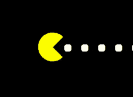

Porque fizeram esse jogo no Google?
No 30º aniversário do PAC-MAN, você pode redescobrir algumas das suas memórias de 8 bits
O criador do Google, Ryan Germick se certificou e incluir a lógica, os gráficos e os sons originais do PAC-MAN.
Trazer de volta as personalidades individuais dos fantasmas e até mesmo recriar os bugs originais dessa obra-prima de 1980.
Historia
Há exatos 35 anos, chegava aos fliperamas, no Japão, aquilo que viria a ser considerado um dos maiores clássicos dos videogames:Pac-Man.
Muito conhecido também no Brasil pelo apelido de Come-come, o revolucionário jogo de arcade foi lançado em 22 de maio de 1980.
Pac-Man foi criado por Toru Iwatani, um jovem desenvolvedor da Namco.
O título levou aproximadamente um ano para ser completado.
Um dos objetivos principais de Iwatani era criar um jogo que tivesse mais apelo para o público feminino, pois haviam poucas meninas interessadas em fliperamas, na opinião dele.
Ao longo de 1979, então, ele trabalhou com uma equipe de nove pessoas na empresa para criar o que viria a ser o lendário personagem amarelado.

Como Iniciar O Jogo Pac-Man:
- Passo 1: Vá até a página do Google e faça uma busca tradicional pelo termo Pac-Man;- Passo 2: O jogo aparecer assim que a busca for feita.
- Passo 3: Precione Jogar e pronto o jogo começara em instantes;

Objetivos do jogo
Um jogador deve ser Pac-Man, e o outro deve ser um fantasma.O objetivo de Pac-Man é comer todos os pontos sobre o tabuleiro, evitando os fantasmas.
A meta dos Fantasmas é a capturar Pac-Man, simplesmente tocando-o
Adicionado um pequeno ovo de páscoa: se você jogar outra moeda, a Sra. PAC-MAN se junta à festa e você pode jogar junto com outra pessoa.